NAIA를 아예 설치하지 않은 상태인 경우 (Community)
- 다음 페이지에 방문합니다 : https://github.com/DNT-LAB/NAIA2.0/releases
- 가장 최신 버전 (On this page 바로 아래에 보이는 숫자의 버전) NAIA-Portable을 다운로드 합니다.
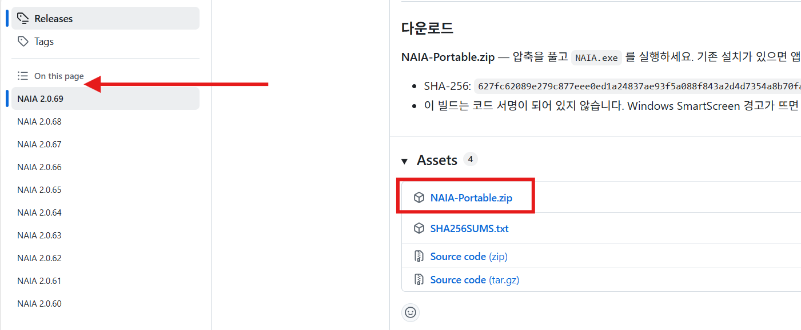
Mac 운영체제를 사용하시는 분들은 설치판이 아닌 https://arca.live/b/aiart/173698731 를 참고합니다. 잘 안되면 AI의 도움을 받으세요.
- 다운로드 받은 NAIA-Portable 압축파일을 압축해제 합니다.
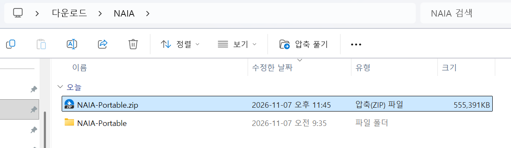
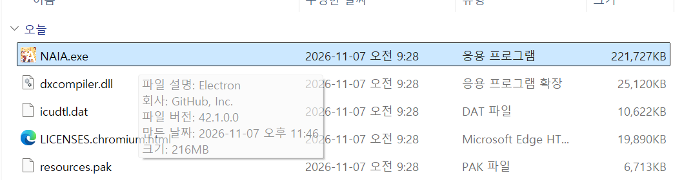
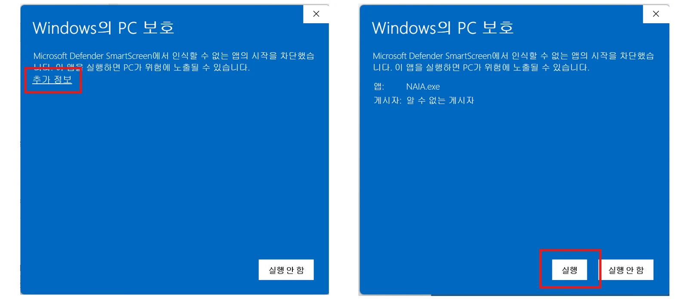
- NAIA.exe 를 실행하면 Windows의 PC 보호 화면이 나타납니다. 빨간색 상자를 확인하고 추가정보 -> 실행을 눌러주세요.
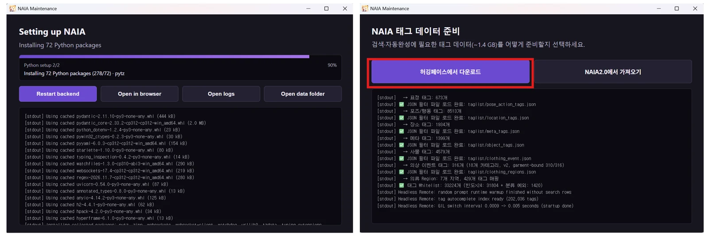
- NAIA의 초기 설치에는 꽤 오랜 시간이 소요됩니다. (Electron 의존성 설치 및 파이썬 의존성 설치)
- 작업이 완료되면 NAIA 태그 데이터 준비 화면이 나타나고 [허깅페이스에서 다운로드] 버튼을 눌러 NAIA 태그 리스트를 셋업합니다.
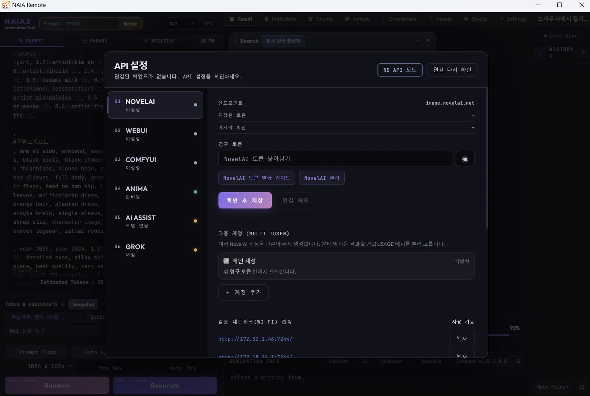
- 모든 준비가 완료되면 그림과 같이 [ API 설정 ] 화면이 나타납니다.
- NAIA를 먼저 체험해 보시려면 상단의 [ NO API 모드 ]를, 바로 Novel AI나 Comfy UI, ANIMA 등의 백엔드에 연결하시려면 아래를 참고합니다.
1. 생성 백엔드 연결
NAIA는 NovelAI · WebUI · ComfyUI에 그림을 맡겨 생성합니다.
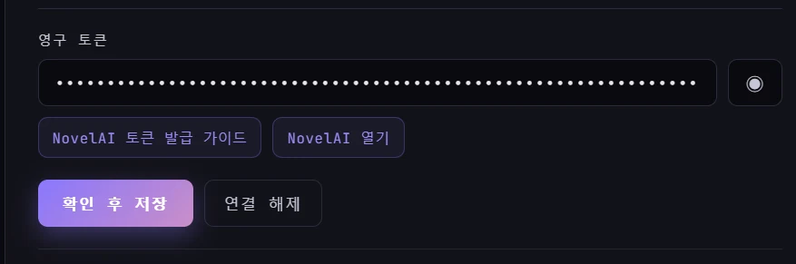
- NovelAI : NovelAI 사이트의 Account Settings에서 영구 토큰(
pst-로 시작)을 받아 영구 토큰 칸에 붙여넣고 [확인 후 저장]을 누릅니다. 자세한 순서는 NovelAI 토큰 발급에 있습니다.
- WebUI · ComfyUI : 실행 중인 UI의 주소를 붙여넣습니다. WebUI는
webui-user.bat을 편집해set COMMANDLINE_ARGS=--api를 넣어야 연결됩니다.
이 가이드는 NAI를 기준으로 합니다.
[Disclaimer] NAIA의 사용자는 명확한 할당량이 부여된 Novel AI v5 외에 NAI v3, NAI v4, NAI v4.5 등을 사용할 수 있습니다. Anlatan은 공식적으로 Novel AI 서비스 품질에 영향을 끼칠 수 있는 자동화를 허용하고 있지 않으며 NAIA의 과도한 자동화 기능 사용으로 인한 계정 사용 제한에 대해 v5를 포함하여 어떠한 책임도 지지 않습니다.
마지막으로 확인된 정지 케이스 : v5 업데이트 이후 하루종일 NAIA를 이용하여 3천장 이상의 NAI v4 이미지를 생성했던 사용자가 정지된 사례가 있습니다. v5를 제외한 이미지 생성은 하루 1,200장 안쪽으로 쓰기를 권장합니다.
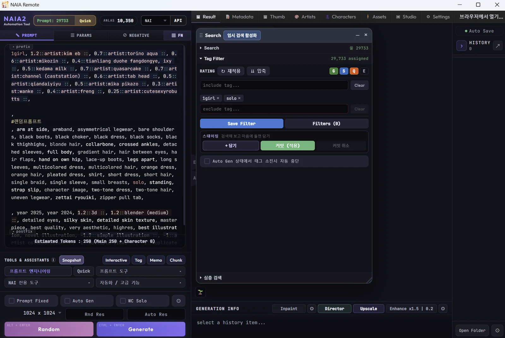
- NAI API로 연동한 경우 다음과 같은 화면이 나타날 것 입니다. Search Window는 당장 신경쓰지 마세요.
- 처음에는 사용자의 이해를 돕기 위해 기본 프롬프트 및 설정이 잡혀 있습니다.
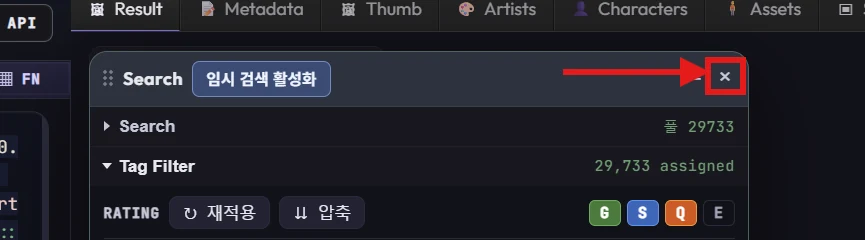
- 어차피 나중에 다시 볼 테니까 현재는 X 버튼을 눌러 닫습니다.
2. Random → Generate로 첫 그림 생성하기
NAIA에 대해 자세히 알아보기 전에, 기본적인 NAIA의 이미지 및 프롬프트 생성 기능 작동 방식에 대해 간단히 이해하는 것이 좋습니다.
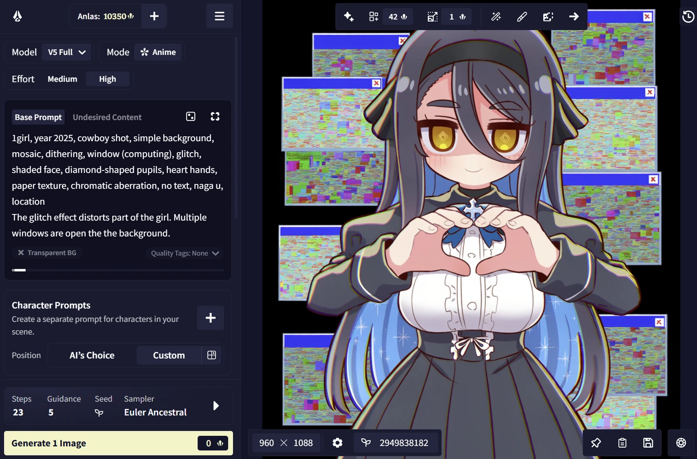
- Novel AI 공식 홈페이지에서 Base Prompt 공간은 사용자가 직접 수정/삭제하지 않는 한 지속적으로 유지되는 작업 영역입니다.
공식 홈페이지에서의 고정 스타일 태그 작성 방식 (예시)
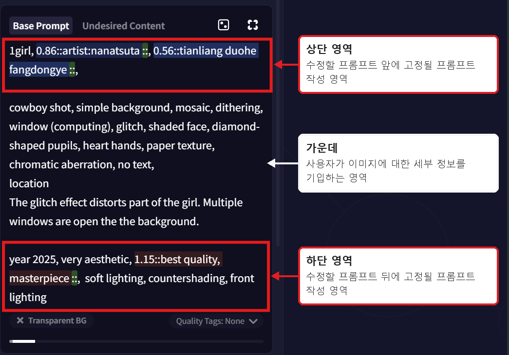
사용자는 자신이 원하는 스타일을 고정하기 위해 통상적으로 상/하단 영역을 나눠 스타일을 제어할 수 있는 프롬프트와 품질을 제어할 수 있는 프롬프트를 고정하고 나머지 프롬프트를 가운데 공간에 작성합니다.
NAIA에서 프롬프트 공간은 휘발성
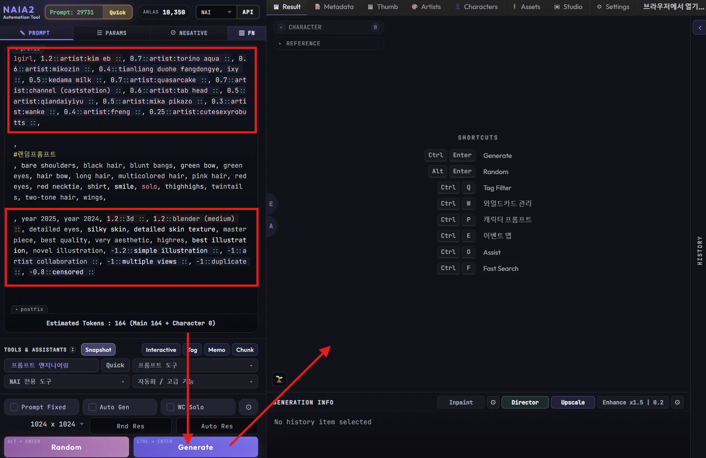
이러한 구조 자체는 기본적으로 NAIA도 동일합니다. 시험 삼아 Generate 버튼을 눌러 보시면 입력되어 있는 프롬프트로 이미지 한장이 생성됩니다.
- 초기 설정값은 Novel AI v4.5로 사용자의 v5 사용량을 차감하지 않습니다. (Anlas가 들지 않는 것은 Opus 구독 + 28스텝 · 1MP 이하일 때뿐입니다. 다른 구독은 Anlas가 소모됩니다.) v4.5에서 사용법을 숙지하신 뒤 v5로 넘어갑니다.
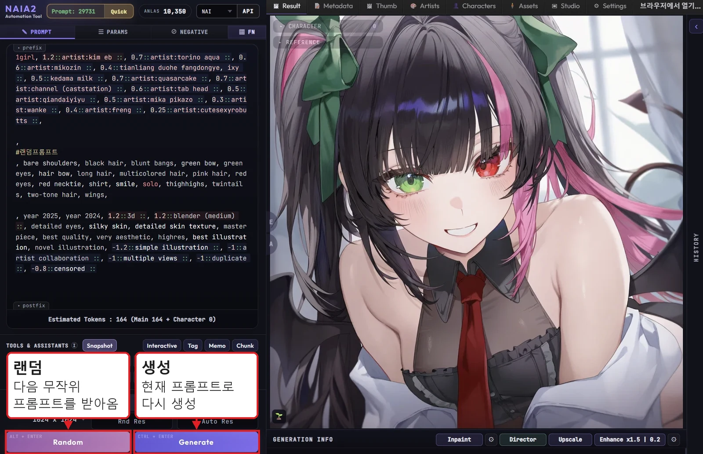
이미지 생성 후, 사용자는 Generate 버튼을 다시 눌러 현재 메인 프롬프트 창에 올라와 있는 프롬프트로 다시 이미지를 생성하거나, 랜덤 버튼을 눌러 무작위 프롬프트를 다시 배정받을 수 있습니다.
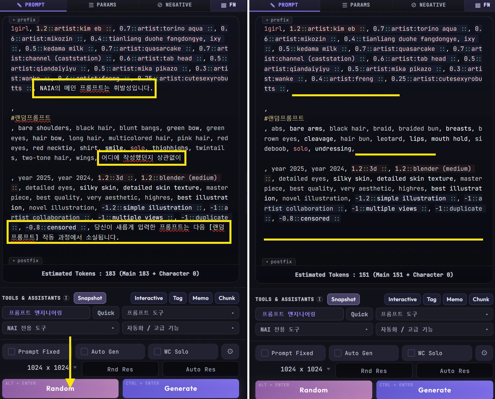
이 때, 이미지 스타일을 조정하기 위해서 메인 프롬프트 영역을 수정하면 다음 [랜덤 프롬프트] 가 동작할 때 작업 내용이 전부 유실됩니다.
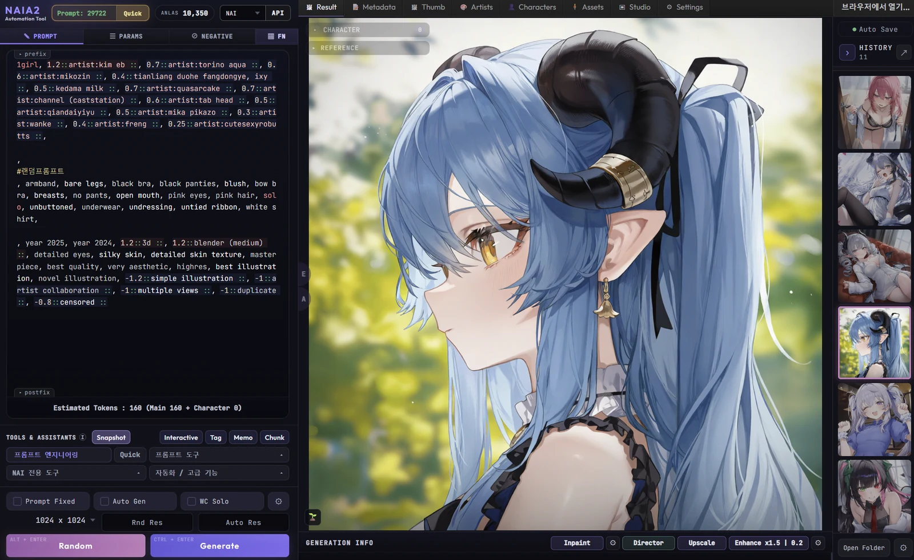
아무튼 [랜덤] -> [생성] 버튼을 계속 누르면 그림과 같이 계속 무작위 이미지가 생성되는 것을 확인할 수 있습니다.
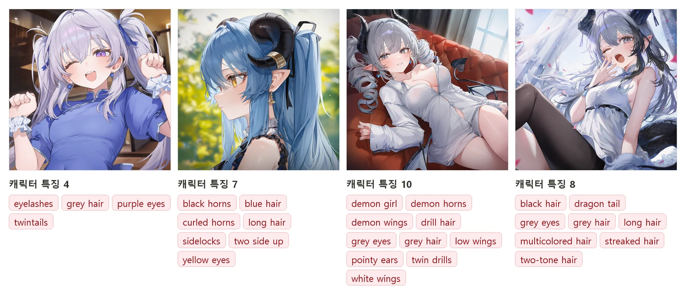
이렇게 해서 생성되는 캐릭터는 전부 랜덤 프롬프트 안에 내장된 조합입니다. 물론, 이렇게 고정된 랜덤 캐릭터를 받는 것을 선호하시는 분들도 계시겠지만 내가 만들고 싶은 캐릭터를 고정하기 위해 프롬프트 엔지니어링 모듈을 살펴보도록 합시다.
3. 프롬프트 엔지니어링 모듈 살펴보기
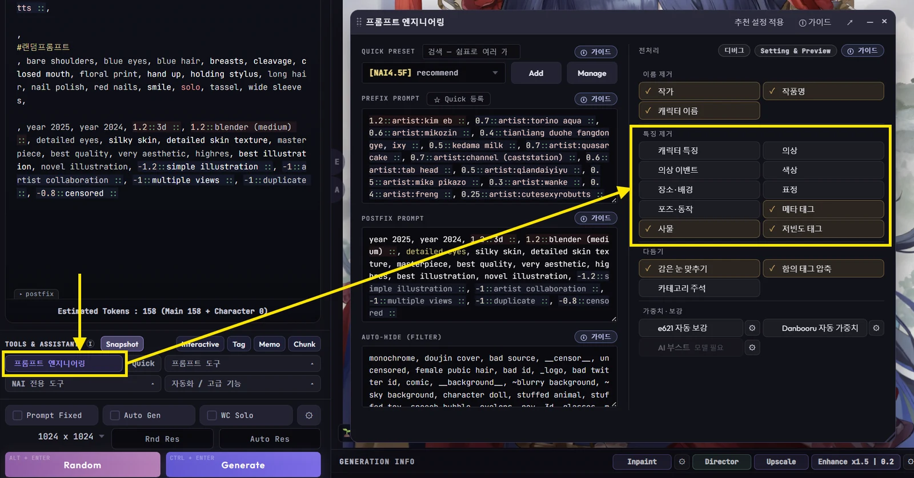
- 왼쪽 아래의 [프롬프트 엔지니어링] 버튼을 누르면 복잡한 창 하나가 열립니다.
특징 제거 옵션
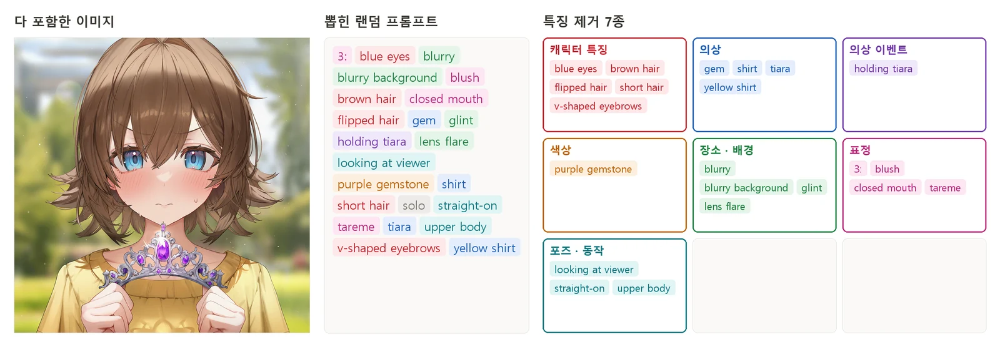
- 기본적으로 7개의 특징 제거 옵션이 비활성화 되어있습니다.
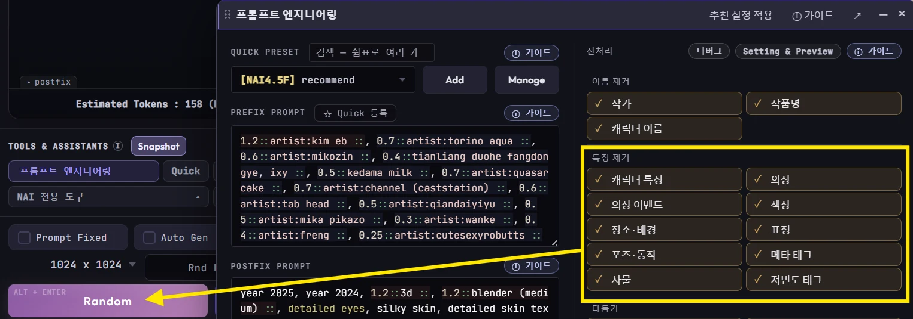
- 이해를 위해 모든 [특징 제거] 옵션을 다 켜고 [랜덤] 버튼을 눌러봅시다.
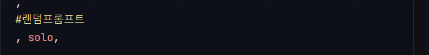
- 대부분의 상황에서 랜덤 프롬프트 출력 영역에 "solo" 하나의 태그만 나타납니다.
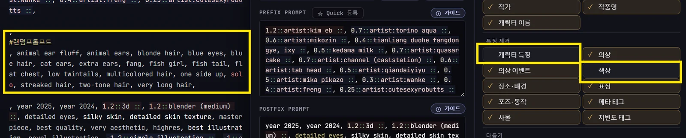
- [캐릭터 특징]과 [색상] 버튼을 해제하고 랜덤을 돌려보면 "머리 색", "눈 색", "헤어스타일" 등에 해당하는 태그들이 랜덤 프롬프트에 반영됩니다.
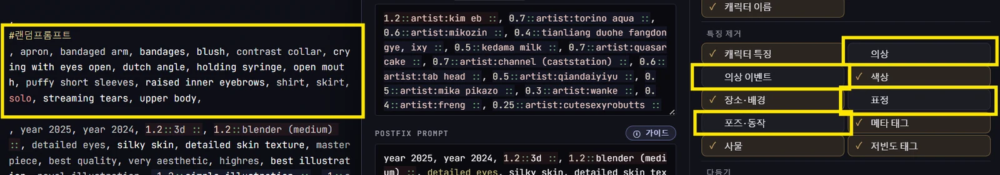
- 반대로 [의상], [의상 이벤트], [표정], [포즈·동작] 등만 해제하고 랜덤을 돌려보면 위에서 봤던 캐릭터 특징 및 색상 태그를 제외한 태그만 남게 됩니다. (필요한 경우 배경도 해제)
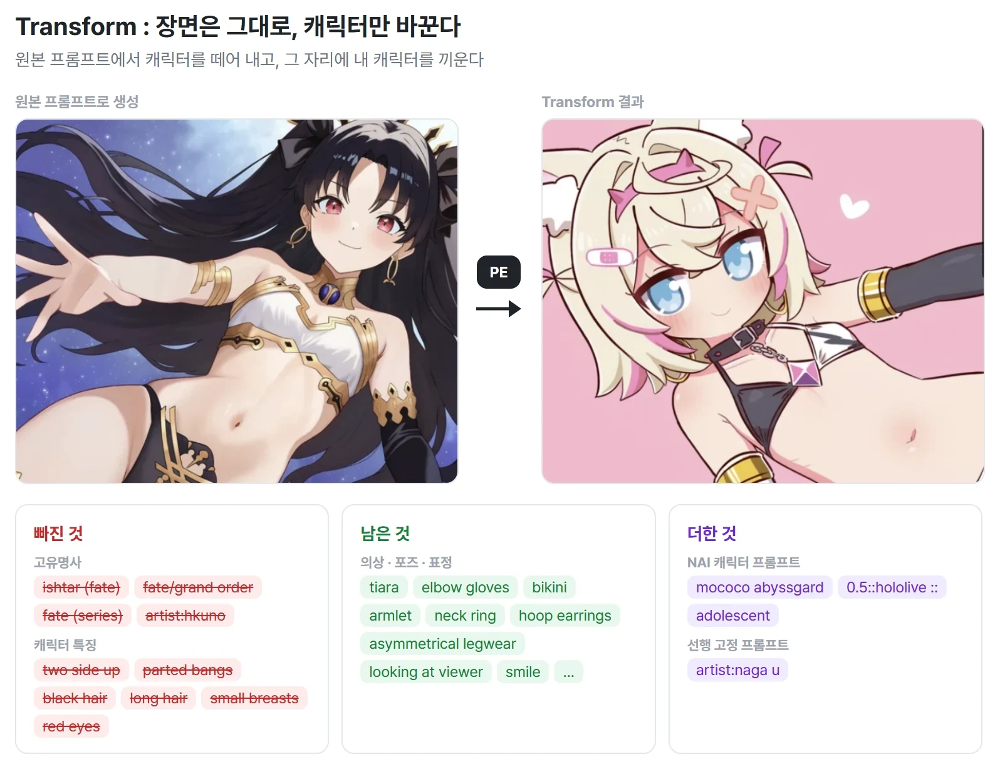
이전 페이지에서 NAIA의 주요 목적에 대해 설명해 드렸던 적이 있습니다. 지금 [의상], [의상 이벤트], [표정], [포즈·동작] 등만 해제한 상태가 "남은 것" 에 해당하는 부분인데 이제 캐릭터 프롬프트쪽을 채우면 캐릭터를 고정할 수 있게 됩니다.
캐릭터 프롬프트 슬롯
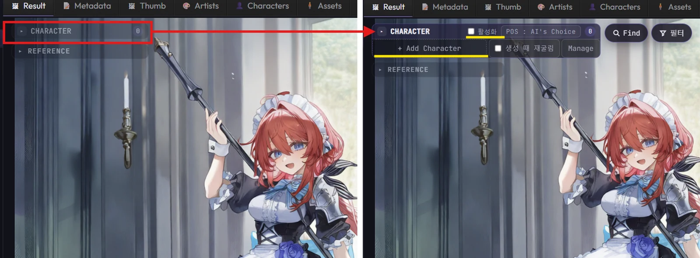
이미지 영역 좌측 상단을 살펴보면 [ CHARACTER 0 ] 으로 표시되는 버튼이 있습니다. 이를 눌러보면 캐릭터 프롬프트를 활성화 하고, 캐릭터를 추가할 수 있는 슬롯이 나타납니다.
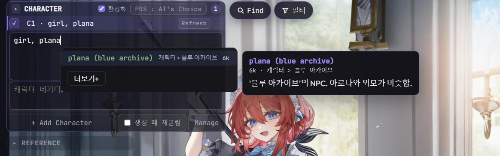
- [캐릭터 프롬프트] 의 기본적인 작성 규칙으로, 시작은 대상 인물의 성별이 됩니다.
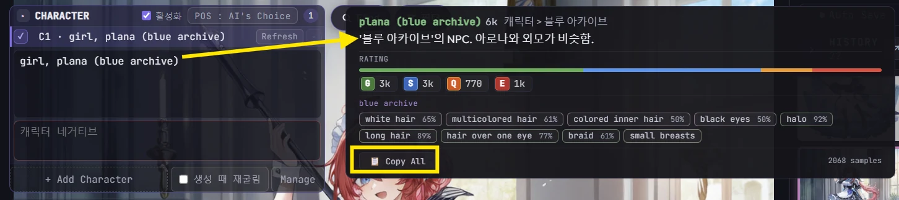
- 사용자가 만약 NAIA에 색인된 캐릭터의 이름을 입력하면, 그 캐릭터의 특징 프롬프트를 한 번에 받아올 수 있습니다.
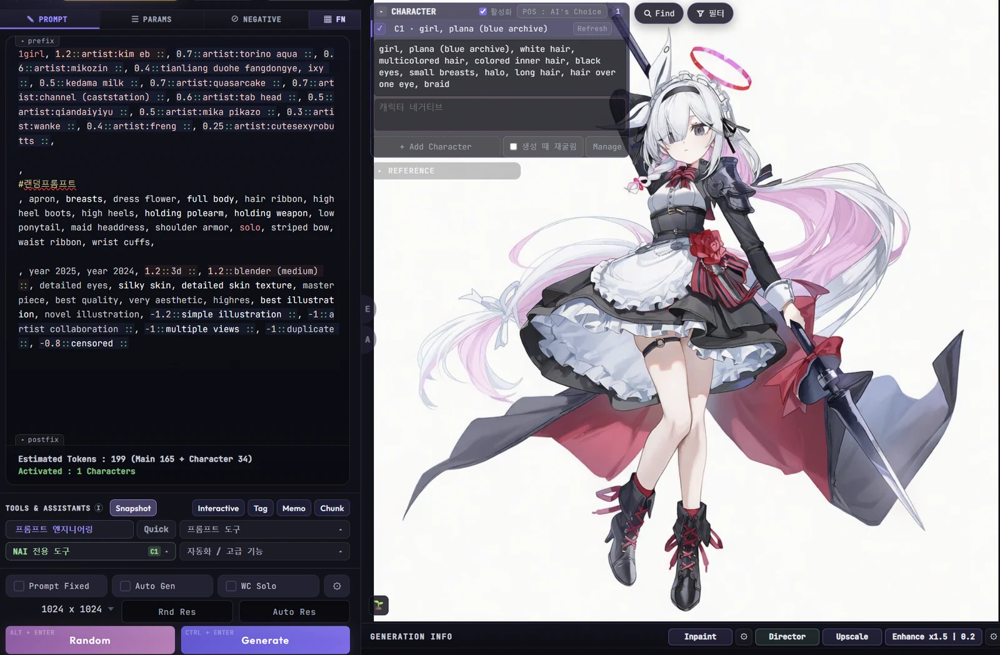
- 이 상태로 생성 버튼을 누르게 되면 그 때부터는 메인 프롬프트 + 캐릭터 프롬프트 조합으로 이미지가 생성됩니다.
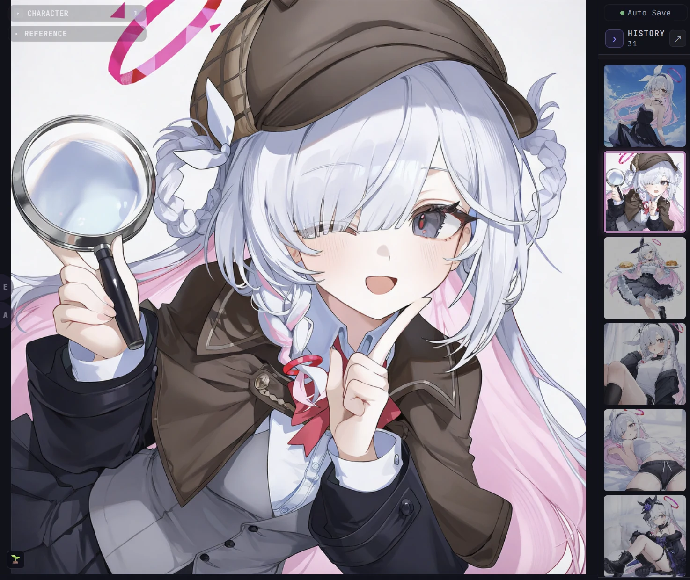
- 이후에는 [랜덤] -> [생성]을 반복 할 때 마다 적용한 캐릭터로 랜덤 이미지가 생성됩니다.
랜덤 프롬프트 요약
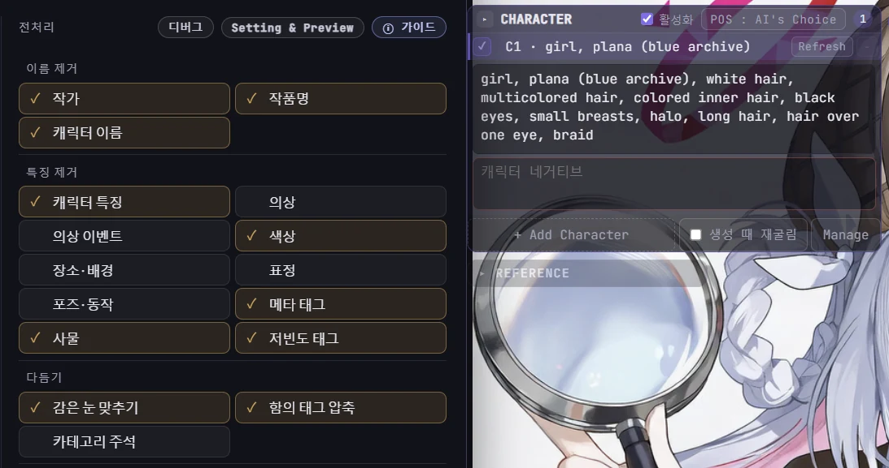
- [프롬프트 엔지니어링] 모듈에서 [캐릭터 특징]과 [색상] 제거를 켜고, 의상 · 표정 · 포즈 등은 꺼 둡니다.
- [캐릭터 프롬프트] 슬롯에 고정할 캐릭터를 입력합니다.
- 랜덤 버튼을 누르고 생성합니다.
4. 랜덤 프롬프트 정제하기 (방법1)
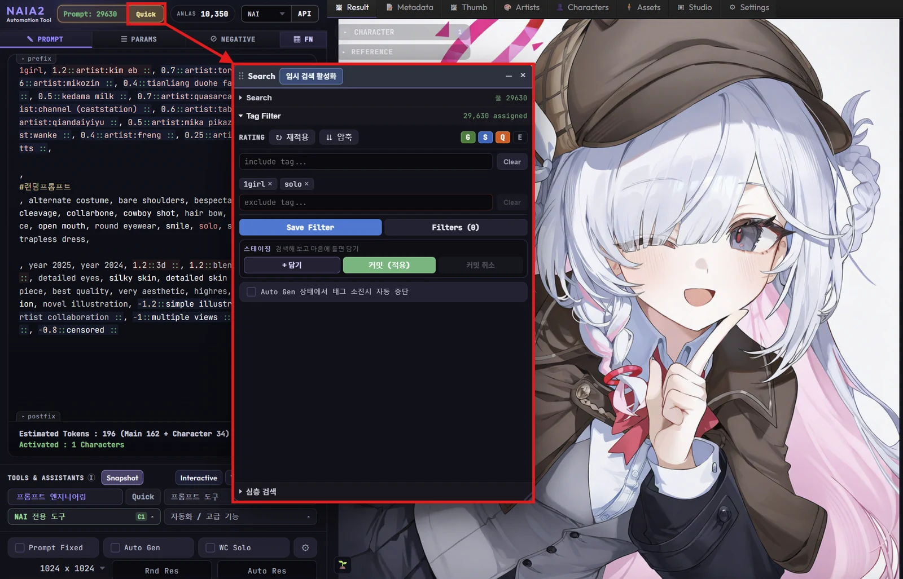
2026년 11월 7일 기준으로, 현재 NAIA에는 랜덤 프롬프트를 호출하는 사양이 여러개로 갈라져있습니다. 이 섹션에서는 가장 기본적인 랜덤 프롬프트 정제 방법에 대해 다룹니다.
- 상단 Quick 버튼을 누르면 [Tag Filter] 창이 나타납니다.
- NAIA의 최초 설치시 당황스러운 상황을 막기 위해 무조건 랜덤 프롬프트가 1girl, solo + 건전한 이미지 ~ 성적 행위가 없는 nsfw 이미지 까지만 출력하도록 제한되어 있습니다.
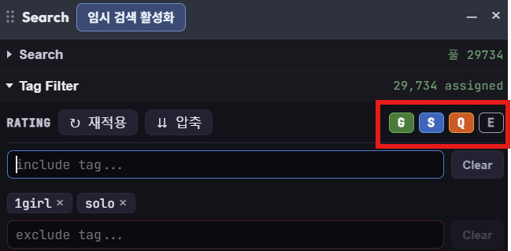
- 이러한 이미지 수위는 G / S / Q / E 버튼을 조작하여 On / Off 할 수 있습니다.
각 버튼은 Danbooru의 콘텐츠 등급(Rating) 4단계입니다. 그림의 노출 수위와 성적 묘사 정도로 나뉩니다.
| 버튼 · 등급 | 기준과 예 |
|---|---|
G · Generalrating:general | 전체 이용가. 노출이나 성적 암시가 없는 그림 - 일상 일러스트, 풍경, 메카닉, 평범한 옷차림의 인물화 |
S · Sensitiverating:sensitive | 약한 선정성. 직접 노출은 없지만 성적 매력이 강조된 그림 - 수영복 · 비키니, 바니걸, 몸에 붙는 옷, 가슴골, 판치라 |
Q · Questionablerating:questionable | 준성인(nsfw). 성행위는 없지만 노출이 크거나 성적 암시가 강한 그림 - 유두 노출, 노출이 큰 란제리, 도발적인 성적 포즈. 성기 노출 · 성행위는 들어가지 않습니다. |
E · Explicitrating:explicit | 성인물(porn, R-18). 노골적인 성적 묘사 - 성기 노출, 성행위, 성적인 맥락의 체액, 하드코어 페티시 |
같은 이름의 태그(rating:general 등)를 프롬프트에 넣어 수위를 유도하거나, 네거티브에 넣어 원치 않는 수위를 막는 데도 씁니다.
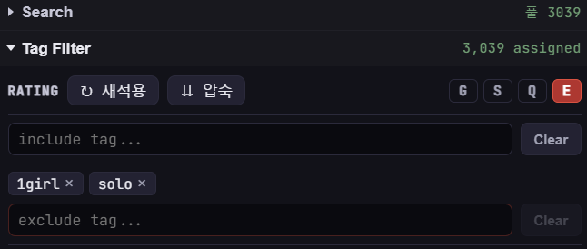
- G / S / Q / E 버튼은 끄고 켤 수 있으며, 랜덤 프롬프트 풀에 즉각적으로 반영됩니다.
- Explicit 유형의 이미지를 생성해보고자 하는 경우, 그림과 같이 E만 활성화 된 상태에서 랜덤 프롬프트 버튼을 눌러 테스트 합니다.
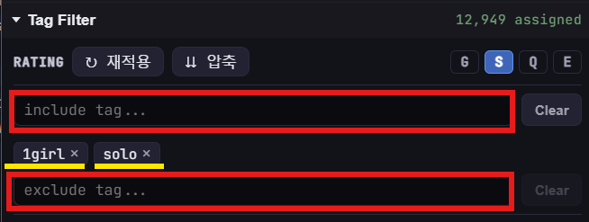
- include tag와 exclude tag는 랜덤 프롬프트 풀에서 '특정 태그' 를 포함하는 랜덤 프롬프트만 찾거나 제외하는 것 입니다.
- 이 검색 영역은 한글 태그를 지원합니다.
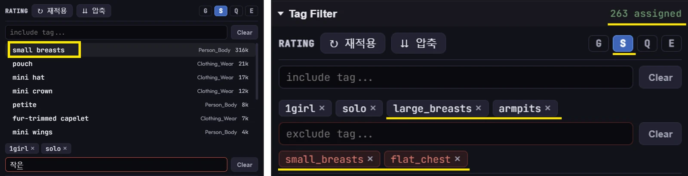
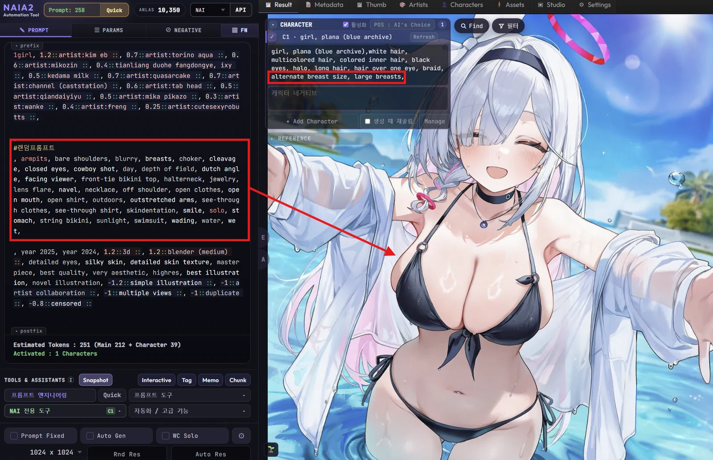
- 이런 느낌으로 특정 구도가 강조되는 이미지를 랜덤으로 생성할 수 있게 됩니다.
그러나:
- NAIA 최초 실행시 Tag Filter에서 미리 불러오는 랜덤 프롬프트는 NAIA 전체 랜덤 프롬프트의 0.7% (65000개)로 제한됩니다.
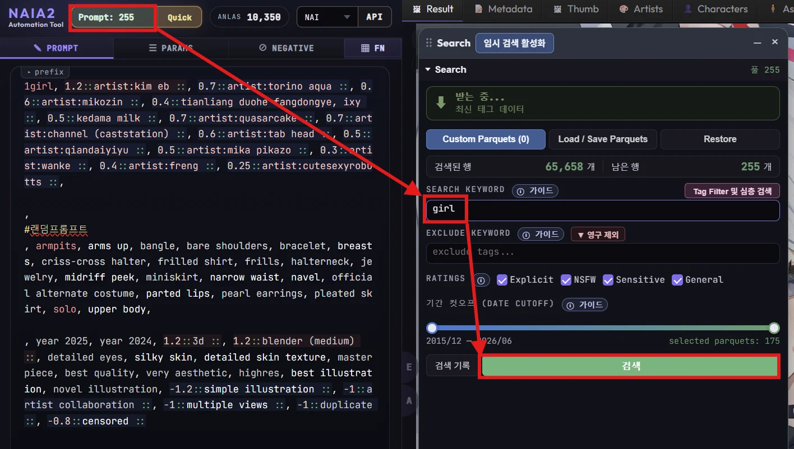
- NAIA의 전체 랜덤 프롬프트를 불러오고자 하는 경우 상단 [Prompt] 영역을 눌러 Search Keyword에 "girl" 입력 후 [검색] 버튼을 누릅니다.
- 이 경우 NAIA 단독으로 13GB 정도의 시스템 메모리를 사용합니다.
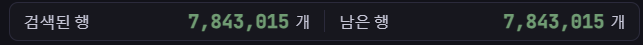
- 이정도 크기의 랜덤 프롬프트를 정제하는 것은 매우 높은 리소스를 요구합니다.
- 그래서 컷오프 범위를 지정하고, 사용하지 않을 Rating은 과감하게 버리는것을 권장합니다.
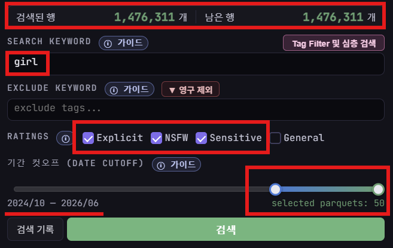
- 좀 더 자세한 내용은 추후 Search, Tag Filter, 심층 검색 등을 다루는 챕터에서 다시 이야기 하겠습니다.
- 지금은 다루지 않지만 exclude tags에 "furry female", "splatoon", "one-eyed", "guro", "scat" 등의 태그를 미리 넣어두는게 권장됩니다.
랜덤 프롬프트에서 적절한 해상도 받아오기
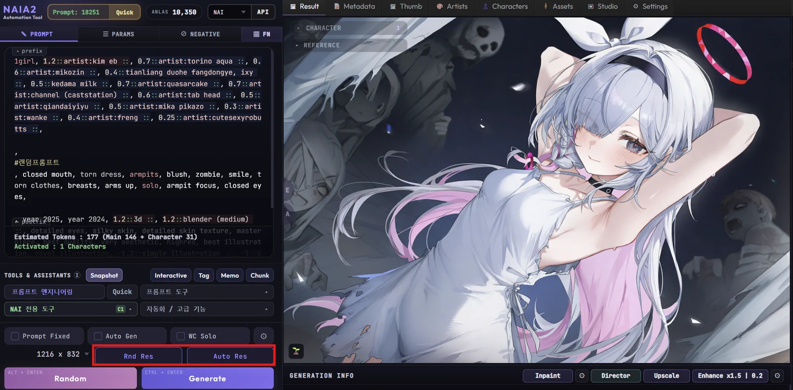
- 하단 Auto Res를 체크한 상태로 Generate 버튼을 누르면 랜덤 프롬프트에 맞는 해상도로 이미지가 생성됩니다.
- Rnd Res 만 켰을 때 : 매 생성마다 무작위 1MP 해상도로 이미지가 생성됩니다.
- Auto Res 만 켰을 때 : 랜덤 프롬프트에 담긴 고정 해상도 비율로 이미지가 생성됩니다.
- 둘 다 켰을 때 : 첫 이미지 생성은 고정 해상도 비율로, 이후 생성은 랜덤 해상도로 이미지가 생성됩니다. (Auto Gen 기준. [생성]을 직접 누를 때는 Rnd Res가 우선해 매번 무작위 해상도가 됩니다)
5. 스타일 수정하기
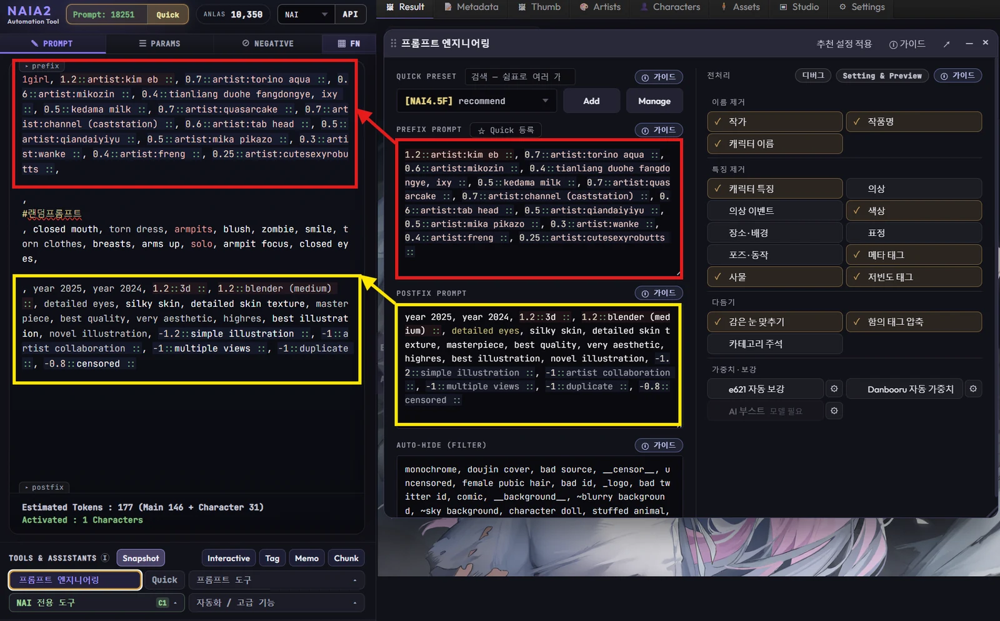
- 프롬프트 엔지니어링 모듈을 몇 번 열어보셨으니 아시겠지만 Prefix Prompt내 프롬프트와 Postfix Prompt 내 프롬프트가 계속 위 아래에 붙어서 들어갑니다.
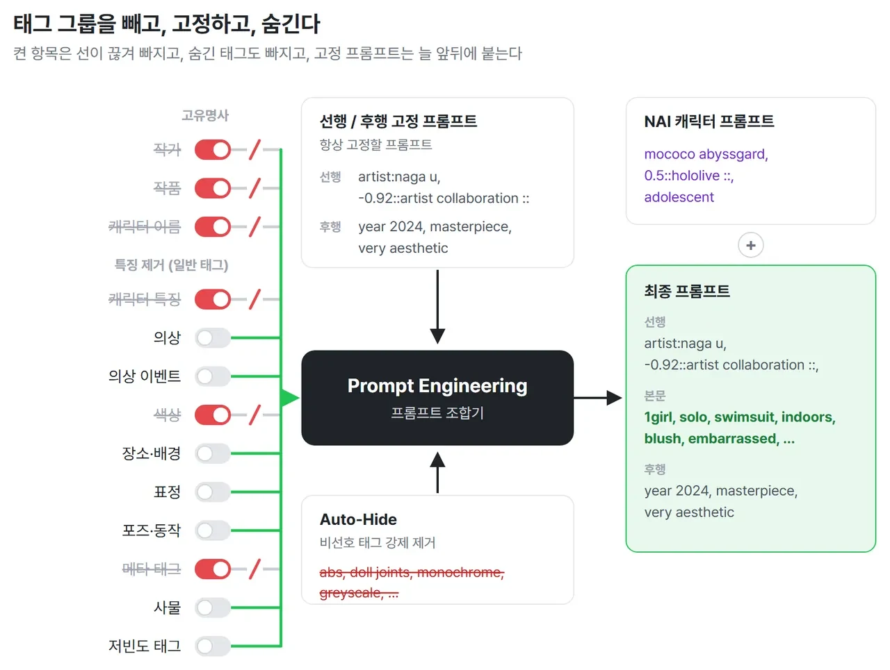
- 여기까지 따라오시면 대략적인 구조가 이해되셨을 거라 생각됩니다.
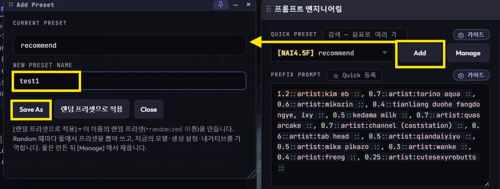
- 프롬프트 엔지니어링 모듈에서 Add 버튼을 누르면 현재 프리셋을 복제할 수 있는 화면이 나타납니다.
- Prefix / Postfix를 수정하기 전에, 이후 재사용 하고 싶은 고정 프롬프트는 백업하고 진행하는 것이 좋습니다. (수정 후 복구하기가 어렵습니다)
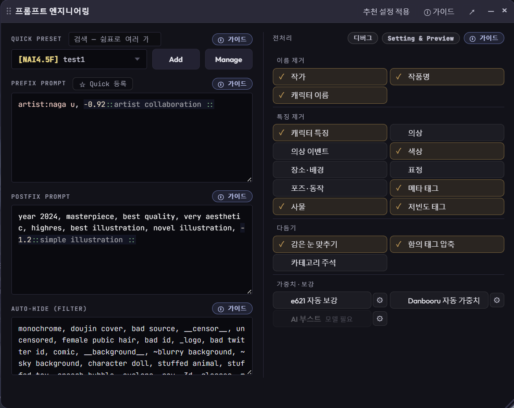
테스트 케이스:
- artist:naga u, -0.92::artist collaboration ::
- year 2024, masterpiece, best quality, very aesthetic, highres, best illustration, novel illustration, -1.2::simple illustration ::
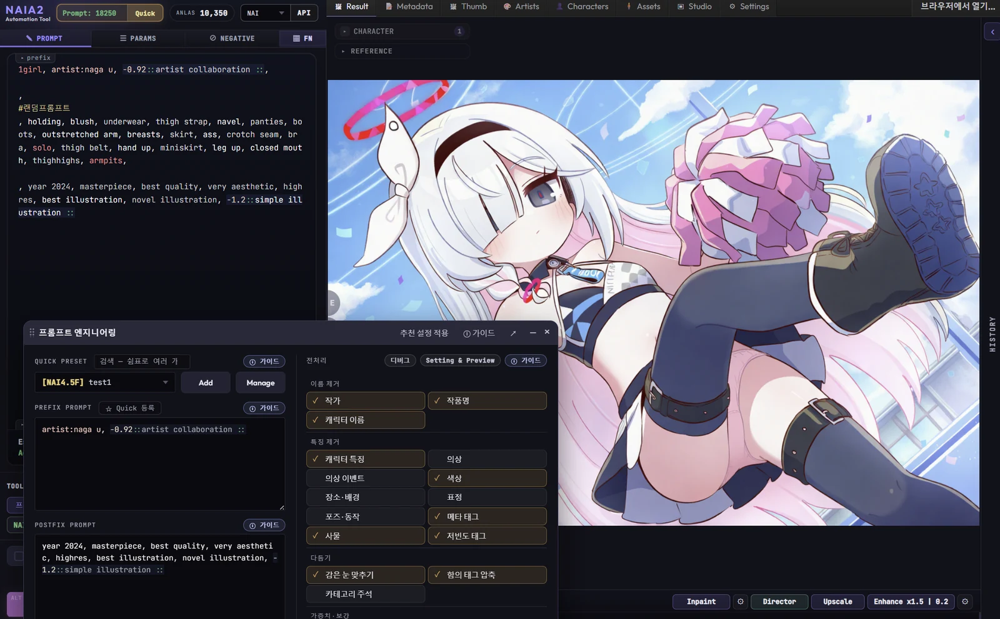
- 이후에는 [랜덤 프롬프트] 버튼을 누를 때 현재 설정값으로 프롬프트가 조립됩니다.
모델의 변경
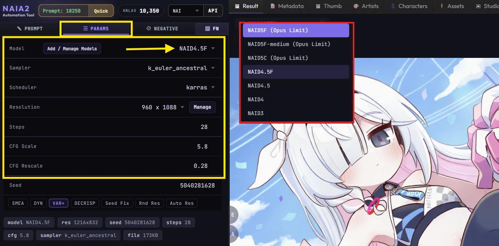
- PARAMS 탭을 누르면 모델을 변경할 수 있는 화면이 나타납니다.
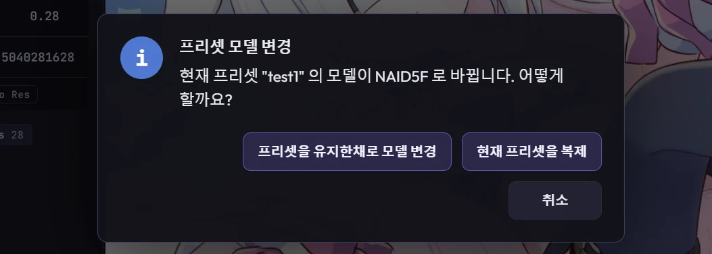
- 모델을 바꾸게 되면 경고창이 나타납니다. 지금 프리셋을 그대로 고쳐도 될 때는 [프리셋을 유지한채로 모델 변경], 그 외의 상황에서는 [현재 프리셋을 복제] 하시면 됩니다.
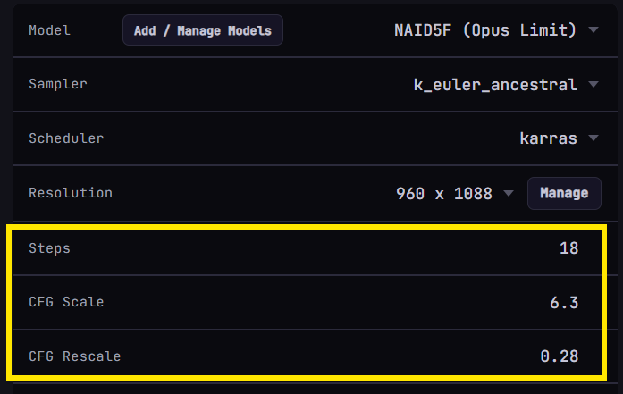
- 모델 변경 후에는 사고가 나지 않게 설정값을 미리 바꿔두시는게 좋습니다. (입력 값은 참고용)
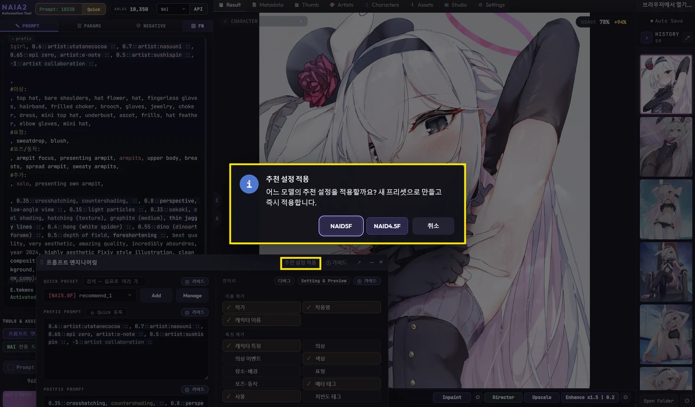
- 프롬프트 엔지니어링 모듈 상단의 [추천 설정 적용] 버튼을 누르면 참고용 NAID5F 프리셋을 하나 꺼내올 수 있습니다.
6. 이미지 자동 생성
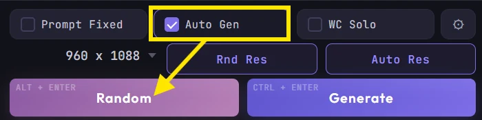
- Auto Gen (자동 생성) 체크 후 [랜덤] 버튼을 누르면 그 때부터 자동 생성이 시작됩니다.
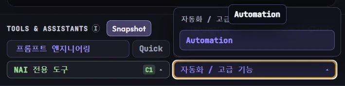
- [자동화 / 고급 기능] 의 Automation 항목에서 생성 딜레이를 주거나, 타이머 설정을 하거나, 횟수 제한을 둘 수 있습니다